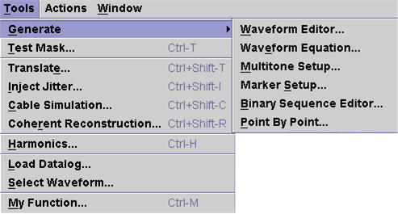

Generate
The Generate menu item allows you to access the following editors:

Waveform Editor - accesses the Waveform Editor used to generate commonly used periodic waveforms.
Waveform Equation - accesses the Waveform Equation editor that allows you to specify an equation that describes the required waveform using this editor.
Multitone Setup - accesses the Multitone Setup tool used to generate multitone waveforms to be used for multitone testing.
Marker Setup - accesses the Marker Setup tool, which is mainly applicable to testing LAN or other communication devices.
Binary Sequence Editor - accesses the Binary Sequence Editor used for generating waveforms typically used in testing LAN or general communication devices.
Point-by-Point - allows you to specify waveform data point-by-point using an editor from within the Signal Analyzer environment.